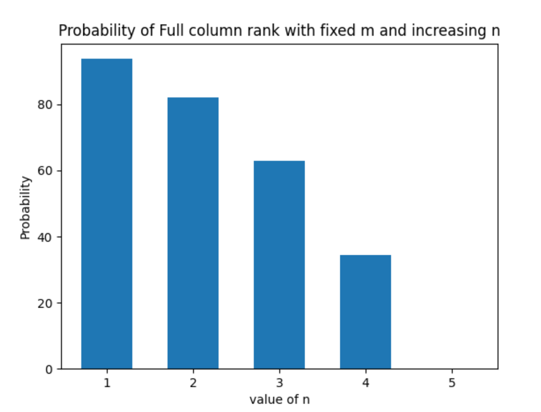
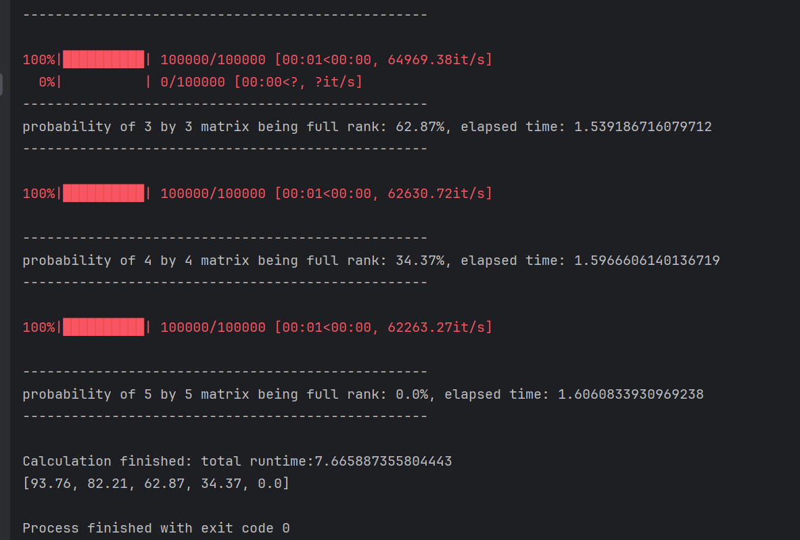

Calculate and visualize the probability that a random binary matrix of size 𝑛×𝑚 is full rank, where 𝑛 is fixed, and 𝑚 increases from 1 to 5, for a large number of random instances.
Generate random binary matrices for different values of 𝑛×𝑚, compute their rank, and determine the proportion of matrices that are full rank. Visualize the probabilities for each matrix size.
  As 𝑚 gets closer to 𝑛(4), the probability of a matrix A being full column rank decreases and becomes 0 when 𝑚 gets bigger than 𝑛, because rank r cannot be bigger than 𝑚.
Investigate the effect of different matrix dimensions (e.g., non-square matrices) on the rank probability.